Home / Topicals
Topicals
Explore thematic philately: art, nature, seasonal subjects and stamps depicting stamps.
Insects ↗
View the original Art on Stamps page.
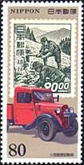
Stamps on Stamps ↗
View the original Art on Stamps page.

Ducks ↗
View the original Art on Stamps page.
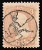
Devils on Postal Stamps
Explore the original illustrated article.
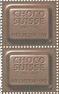
Chocolate on Stamps
Explore the original illustrated article.
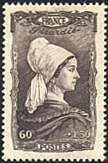
Varied Costumes on Stamps
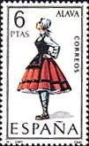
Spanish Regional Costumes
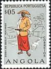
African Costumes and Music
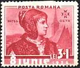
Romanian Costumes
Dogs on Stamps
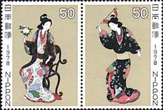
Japanese Costumes
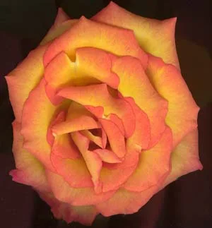
Mother's Day
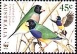
Thaematic Stamp Collecting
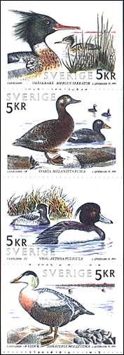
Ducks on Stamps
Canadian Nice Definitives
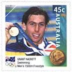
A Modern Philatelic Story
More from the original archive
These links open original articles while their modern versions are being prepared.
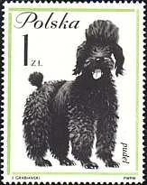
Dogs on StampsDogs in life and on postage stamps — the original illustrated article dedicated to Bobic.
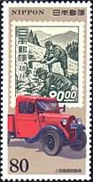
Stamps on StampsIllustrated article from the original Art on Stamps archive.
Mother’s DayIllustrated article from the original Art on Stamps archive.
A Modern Philatelic StoryA conversation about collecting Olympic stamps, illustrated with original Sydney 2000 philatelic material.
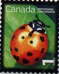
Canadian Nice DefinitivesBeneficial insects on Canada's 2007 definitive stamps, with original illustrations and commentary.
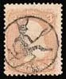
Devils on Postal StampsStamps on Stamps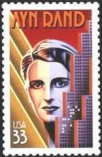
Ayn Rand: The Stamps CollectorWorld Balloon Flight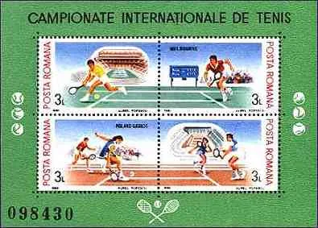
Grand Slam Tournaments 1999The Smiling Princess - Martina HingisLeonard Cohen, The Singer and the Poet Bill Gates: The Freedom to Innovate
Bill Gates: The Freedom to Innovate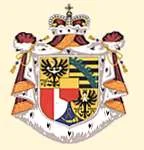
Scratch and Sniff Stamps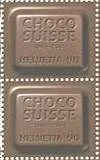
Chocolate on Postage Stamps Devils on Postage StampsDogs on Postage Stamps
Devils on Postage StampsDogs on Postage Stamps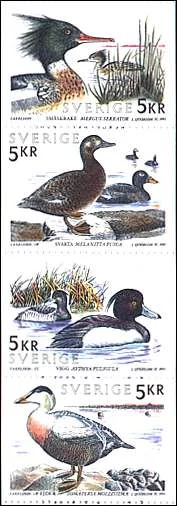
Ducks on Postage StampsOlympic Games on Postage StampsStamps on Stamps